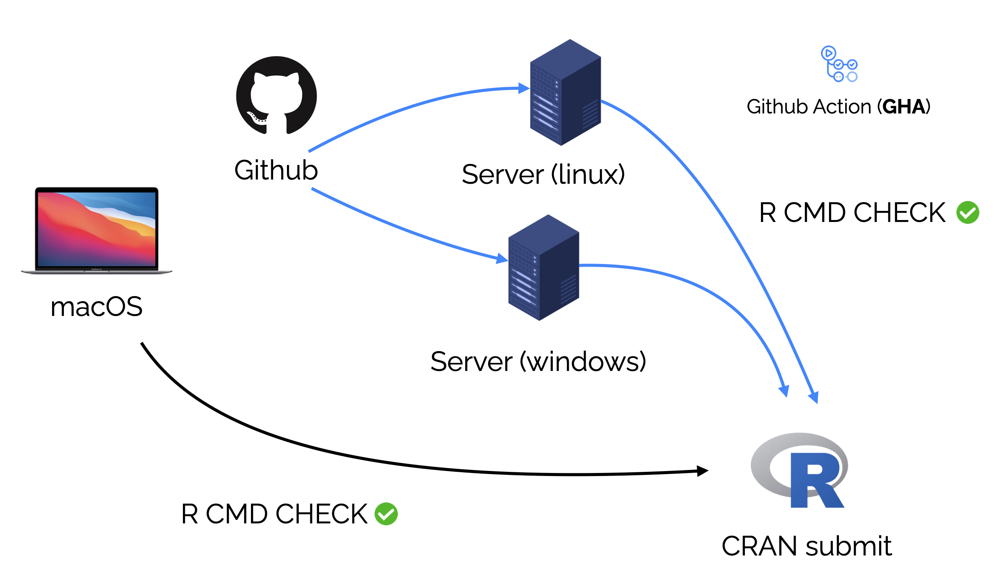
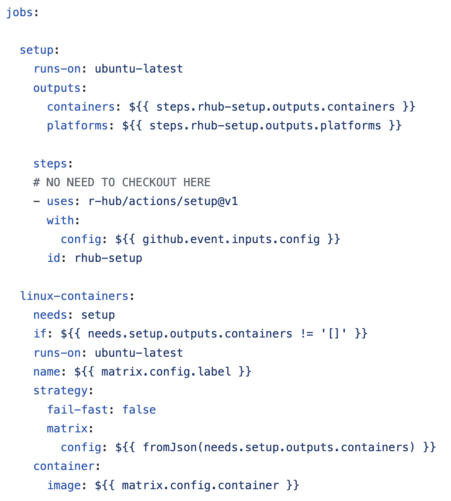
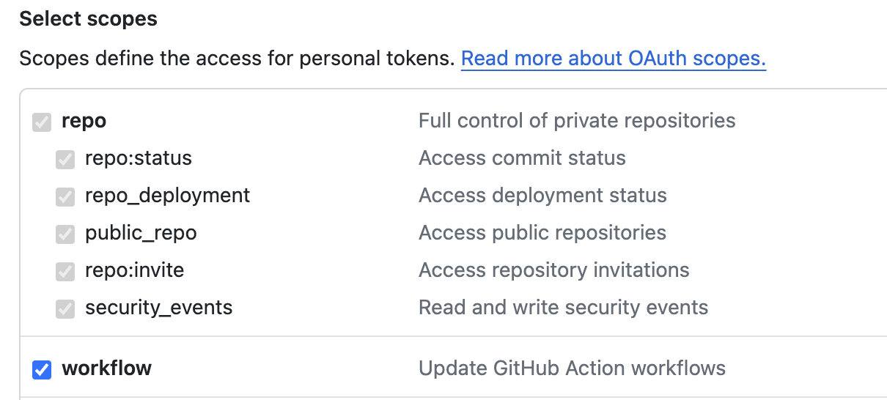

R CMD CHECK
R CMD CHECK란 R 패키지를 개발한 이후 “정상적으로 개발 되었는지” 검증하는 약 50개 이상의 체크리스트를 실행하는 과정으로, 함수의 사용법이 제대로 작성되었는지, 함수의 parameter가 제대로 작성되었는지 등을 포함한다.
물론 R CMD CHECK를 엄격하게 수행하지 않아도 github 를 통해 패키지를 배포하고 실행하는 것에 문제는 없지만, 이러한 과정을 통해 패키지의 오류를 최소화하고 사용자에게 안정적인 패키지를 제공할 수 있다는 것이 검증 되어야만 CRAN과 같은 공식 리포지토리를 통해 패키지를 공유할 수 있다.
이 포스팅에서는 구체적인 내용을 다루진 않지만, 관심이 있다면 Hadley Wickham의 R Packages를 참고하는 것도 좋다.
아무튼 R CMD CHECK 는 devtools패키지를 사용하여 R 패키지를 만들었다면, devtools::check()함수 또는 Rstudio에서 Check 버튼으로 할 수 있고, Warnings, Errors, Notes 등을 통해 수정되길 권고하는 문제들을 확인할 수 있다.

그러나 이 R CMD CHECK의 특징 중 한가지는 패키지를 개발하는 PC의 환경을 기준으로 체크를 진행한다는 것이다. 즉, 아래의 이미지 같은 경우 macOS (Apple clang) 환경에서는 패키지가 테스트 되었고 실행이 보장되지만 만약 사용자의 OS가 mac이 아닌 window, linux 같은 경우에는 패키지가 정상적으로 작동하지 않을 수도 있다.
CRAN은 기본 OS를 정하지 않고 있지만 Windows, macOS, linux 중 최소 2개 이상의 OS에서의 테스트에서 문제가 없길 요구하는 만큼 R 패키지를 개발하는 것은 다양한 OS에서의 테스트를 포함하기도 한다.
이를 위해 다양한 OS 하드웨어, 즉 windows PC, mac, linux 서버가 있다면 베스트겠지만 이러한 경우는 많지 않고 대부분 Github action, AppVeyor, Travis CI 등의 CI/CD 서비스를 활용해 다양한 OS에서의 테스트를 수행하게 된다.
Github action
이 포스팅에서는 Github action을 기준으로 소개하지만 다른 서비스도 과정과 프로세스는 대동소이하다.
Github action은 Github에서 제공하는 CI/CD 서비스로, Github에서 제공하는 다양한 Action을 사용하여 (github 이 제공하는 서버에서의 명령어 실행을 통해) 자동화된 테스트, 빌드, 배포 등을 수행할 수 있다.

여기서 Action이란 yml 파일로 구성된 명령어들의 모음 정도로 생각해도 충분하며, 예시로는 서버에 R을 설치하기, R 패키지를 설치하기, R CMD CHECK를 실행하기 등이 있다. R-hub action 모음, R-lib action 모음 참고.
즉, 이 R CMD CHECK를 포함한 Action들을 github action을 통해 server에서 실행하고 그 결과를 확인하여 CRAN에 올리는 과정을 거치게 되는데 github action의 문제점 중 하나는 아래의 예시와 같이 action을 사용하기 위한 yml 문법이 상당히 이질적이라는 것이다.

r-hub2
r-hub 프로젝트는 R 컨소시엄의 프로젝트 중 하나로, R 개발자들이 R 패키지를 더 잘 개발할 수 있게 하는 목적을 가지고 있다. 다양한 OS에서의 테스트를 수행하는 것을 돕는 것 또한 그 중 하나로 위에서 언급한 Github Action을 개발한다거나 인프라를 제공하거나, 커뮤니티를 통해 문제 해결을 돕는 등의 역할이 있다.
그런데 이 R-hub 프로젝트에서 최근 이 GHA 설정을 돕기 위한 R 패키지, rhub를 개발하여 공개했다.
공식 블로그에 설명 되어 있는 것처럼, 사용 방법은 기존의 Github Action을 사용하지 않았더라도 다양한 OS에서 R CMD CHECK를 손쉽게 수행할 수 있는 Github Action을 설정할 수 있다.
제일 먼저 해야하는 것은 당연하게도 rhub 패키지를 설치하는 것이다. 여기서 pak은 기존의 install.packages와 remotes::install_github 같이 다양한 소스에서의 R 패키지 설치를 통합하여 지원하는 함수로 기존의 패키지 설치 방법들을 대체하기를 권장하고 있다.
pak::pkg_install("rhub")주의할 점으로 rhub 패키지는 공식적인 버전은 2이지만 rhub2가 아닌 rhub로 설치, 실행해야 하며 포스팅에서는 rhub로 표기하겠다.
이 rhub 패키지를 실행하기 위해서는 아래 3가지가 필요한데, R 패키지를 개발하여 github에 공유한 경험이 있다면 별도로 새롭게 준비해야 할 것은 없다.
- github 계정
- R package를 올린 repository. 이때 CRAN을 목적으로 한다면 당연히 Public이어야 한다.
- Github PAT (Personal Access Token), github 에서 발급 받을 수 있고,
gitcreds라는 또 다른 R 패키지를 사용해도 좋다.
Setup
rhub 패키지를 마친 이후 제일 먼저 해야하는 것은 R 패키지 디렉토리에서 rhub_setup 함수를 실행하는 것이다. 이 함수의 역할은 디렉토리의 git repository를 인식하고, Github Action을 위한 yml 파일을 생성한다.
이전에 만들었던 gemini.R 패키지를 아래 이미지 예시로 사용했다.

큰 문제가 없다면, rhub 패키지에서는 이후 진행해야 할 단계도 안내해준다. 즉, 추가된 yml 파일이 추가된 내용을 github에 커밋하여 업데이트를 반영하고 난 뒤 rhub_doctor 함수를 실행한다.
Doctor
rhub_doctor 함수에서는 Github PAT가 제대로 설정되어 있는지를 확인한다. 이후 소개할 rhub의 rhub_check함수는 Rstudio의 콘솔에서 언급한 Github PAT를 사용하여 수동으로 Github Action을 실행하는 역할을 하기 때문에 PAT의 설정 확인이 필요하다.
Github PAT는 “https://github.com/settings/tokens” 링크에서 생성하되 repo와 workflow 권한을 반드시 부여하여 생성해야하만 한다.

Rstudio에 Github PAT를 설정 하는 방법은 credential 패키지의 set_github_pat 함수를 이용한다. 링크 참고
rhub_doctor 함수가 정상적으로 작동했다면 이제 남은 것은 rhub_check 함수를 실행하는 것이다.

Check
이전 단계는 이 함수를 위한 준비 작업이었다 라고 해도 과언이 아니다.

rhub_check 함수는 github repository와 PAT를 인식한 다음 어떤 OS에서 R CMD CHECK를 수행할 것인지 입력값으로 받는다.
이 때 단순히 Windows, macOS, Linux 외에도 이미지처럼 (rhub 프로젝트에서 제공하는) 다양한 OS를 숫자와 쉼표를 통해 구분하여 선택할 수 있다.
함수를 실행한 후에는 GHA 페이지로 연결할 수 있는 링크를 제공하는데 이를 통해 진행 상황을 확인할 수 있다.

최종적으로 rhub와 GHA를 사용한 테스트 패스를 repository에 뱃지로 추가하면 아래와 같이 나타난다.

이 때 readme에 뱃지 아이콘을 추가하기 위해서는 다음과 같이 작성해야한다.
예시로 사용한 gemini.R은
주의할 점으로 이 Github Action을 통한 R CMD CHECK에는 다소 시간이 소요되기 때문에 우선 개발중인 PC에서 R CMD CHECK를 완료한 이후에 실행하는 것을 권장한다.
물론 rhub에는 github나 public repository가 아닌 경우를 위한 안내도 있지만, 이는 대부분의 R 패키지, 특히 CRAN과는 크게 연관이 없기 때문에 별도로 서술하지 않는다.
Summary
이번 포스팅에서는 R 패키지 개발자를 위한 Github Action을 활용하기 위한 rhub 패키지를 소개했다. 이를 통해 R 패키지 개발자는 로컬 환경에서 뿐 아니라 다양한 OS에서의 R CMD CHECK를 통해 패키지의 오류를 최소화하고 더 좋은 패키지를 만들 수 있을 것이다.
원문을 포함한 더 자세한 정보는 rhub의 블로그 에서도 확인할 수 있다.
Reuse
Citation
@online{kim2024,
author = {Kim, Jinhwan},
title = {Rhub와 {Github} {action를} {활용한} {OS별} {R} {패키지}
{검증}},
date = {2024-05-13},
url = {https://blog.zarathu.com/posts/2024-05-13-rhub/},
langid = {en}
}